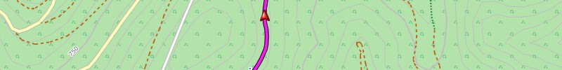
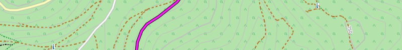
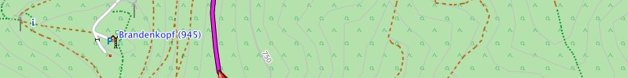

Automatic Route Planner (Routing):
Each street / every way is typically made only for certain types of use.
These limits are stored in our map.
The automatic route calculation tries to take into account these constraints.
The route itself is calculated by BaseCamp or the GPS device.
Routing generally distinguishes between:
- Motorists
- Cyclists
- Pedestrians
Required routing settings (BaseCamp, GPS device):
| Direct | Motorists | Cyclists | Pedestrians | |
|---|---|---|---|---|
| Routing preference | Off Road | For Distance For Time |
For Distance For Time |
For Distance For Time |
| Motorway Trunk / Primary |
- | Do Not Avoid | Do Not Avoid* |
Do Not Avoid* |
| Toll Road |
- | Avoid | Do Not Avoid | Do Not Avoid |
| Carpool Lane |
- | Avoid | Avoid | Do Not Avoid |
| Unpaved Road | - | Do Not Avoid Avoid |
Do Not Avoid Avoid |
Do Not Avoid Avoid |
* Note: As of BaseCamp 4.2.2 the option "Avoid Motorways" leads sometimes to illogical routes.

Understanding the routing better:
- Highway: is forbidden by law for cyclists and pedestrians
- Toll road: excludes motorists from using the road (e.g. bike and foot pathes)
- Carpool lane: excludes motorists and cyclists from using the road (e.g. foot path, stairs, pedestrian zone)
- Unpaved road: road with unpaved surface (compacted surface, gravel, ...), tracks of classes 2-5
- Track: is generally blocked for motorists
- Private road or path: is generally excluded from routing
- (Mountain) trail: Ways of categories 3-6 are generally excluded from the routing (exception: Freizeitkarte Alps)
Notes:
- "Unpaved roads" are typically only suitable for off-road vehicles.
- The routing settings are required for both Base Camp and in the GPS device.
- The shorter the distance the "better" routing result (e.g. <30 km).
- Road barriers such as bollards are currently not consideredfor routing.
Recommendation for BaseCamp 3.3 / 4.0 and GPS device:
- Create and use different profiles for "car", "bike" and "foot".
- Use settings according to the table above.
Note:
Routing has the status "testing" and may be incorrect or insufficient in some cases.
Each route calculation should therefore be critically examined by the user.
